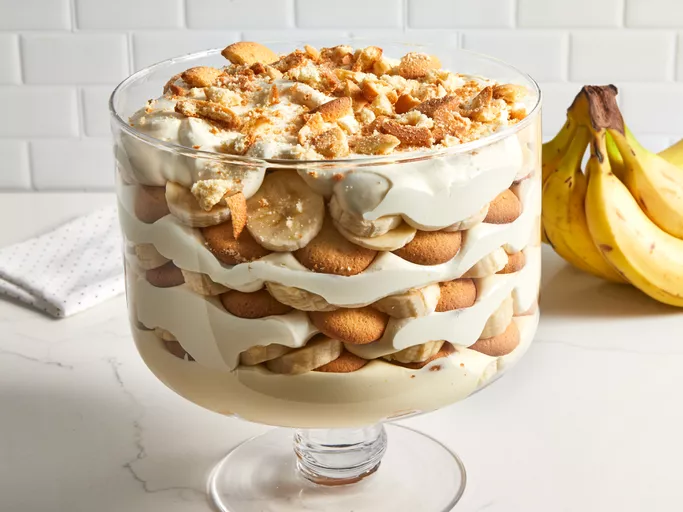

Home
banana-pudding

Description
Banana pudding is a comforting, classic dessert made with layers of creamy vanilla pudding, ripe sliced bananas, and soft cookies—traditionally vanilla wafers. The recipe usually starts with preparing a smooth vanilla pudding, either from scratch with milk, sugar, and eggs or using a custard-style base for extra richness. The pudding is cooked until thick, then allowed to cool slightly so it can set properly.
Once ready, the pudding is layered with fresh banana slices and cookies in a serving dish, allowing the flavors to meld together. As the dessert chills, the cookies absorb moisture from the pudding and bananas, becoming tender and cake-like. Often finished with whipped cream or a fluffy meringue topping, banana pudding is best served cold and is loved for its balance of sweetness, creaminess, and nostalgic flavor.
Prep Time:
- 25 mins
Total Time:
- 25 mins
Servings:
- 20
Ingredients
- 12 cups cold milk
- 1 (5-ounce) package instant vanilla pudding mix
- 1 (14-ounce) can sweetened condensed milk
- 1 tablespoon vanilla extract
- 1 (12-ounce) container frozen whipped topping, thawed
- 1 (16-ounce) package vanilla wafers
- 12 small bananas, sliced or more as needed
Directions
Step 1
- Gather all ingredients.
Step 2
- Place milk and pudding mix in a large bowl; beat with a whisk for 2 minutes. Whisk in condensed milk until smooth.
Step 3
- Stir in vanilla, then fold in whipped topping.
step 4
- Arrange a layer of wafers in the bottom of a glass serving bowl. Top with a layer of banana slices, then a layer of pudding mixture; repeat layers until all ingredients are used.
step 5
- For best results, chill pudding in the refrigerator for at least 1 hour before serving. Top with extra crushed wafers just before serving.
step 6
- Enjoy!
Nutrition Facts (per serving)
Calories
- 329
Fat
- 10g
Carbs
- 57g
Protein
- 4g